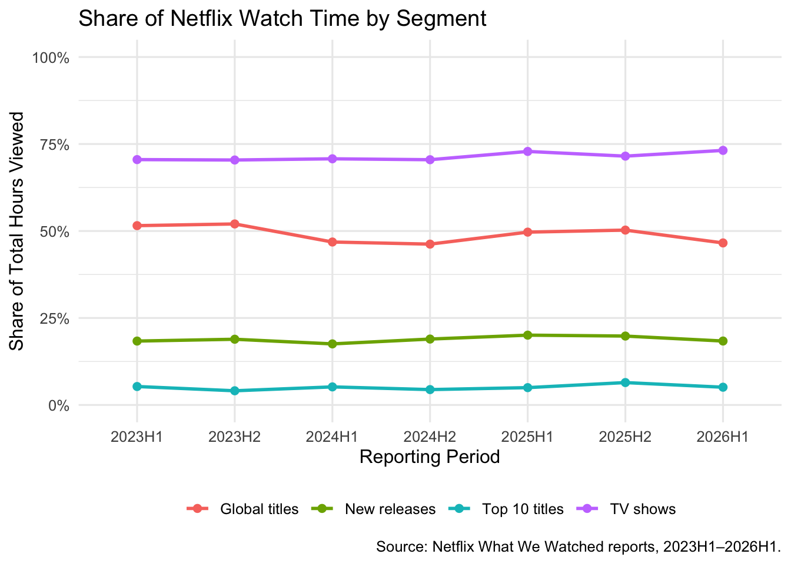

Code
library(tidyverse)
library(gt)
library(scales)
library(skimr)Sean Bosch
TODO (write yourself): 1–2 paragraphs. What the WWW reports are, why Netflix started publishing them, and what this report will look at.
TODO (write yourself): one or two sentences on where the data comes from.
#' Acquire Netflix What We Watched Reports
#'
#' Instructor-provided function (Tasks 1-3). I added a rename() step to give
#' tidy column names (Task 2) and a mutate() step to fix the year and
#' global-availability column types (Task 3) at the end of the pipeline.
load_netflix_data <- function() {
library(tidyverse)
library(rvest)
library(readxl)
library(fs)
data_dir <- path("data", "mp01")
if (!dir_exists(data_dir)) {
dir_create(data_dir, showWarnings = FALSE, recurse = TRUE)
}
NETFLIX_URLS <- list(
`2023H1` = "https://about.netflix.com/news/what-we-watched-a-netflix-engagement-report",
`2023H2` = "https://about.netflix.com/news/what-we-watched-the-second-half-of-2023",
`2024H1` = "https://about.netflix.com/news/what-we-watched-the-first-half-of-2024",
`2024H2` = "https://about.netflix.com/news/what-we-watched-the-second-half-of-2024",
`2025H1` = "https://about.netflix.com/news/what-we-watched-the-first-half-of-2025",
`2025H2` = "https://about.netflix.com/news/what-we-watched-the-second-half-of-2025",
`2026H1` = "https://about.netflix.com/news/what-we-watched-the-first-half-of-2026"
)
download_if_needed <- function(url, local) {
if (!file_exists(local)) {
download.file(url, local, quiet = TRUE, mode = "wb")
}
return(local)
}
read_all_sheets <- function(p) {
excel_sheets(p) |>
map(\(s) read_excel(p, sheet = s, skip = 3, na = "*")) |>
keep(\(d) "Hours Viewed" %in% names(d)) |>
bind_rows()
}
NETFLIX_URLS |>
map(read_html) |>
map(html_element, xpath = "//a[contains(@href, '.xlsx')]") |>
map_chr(html_attr, "href") |>
enframe("period", "url") |>
mutate(path = path(data_dir, paste0(period, ".xlsx")),
path = map2(url, path, download_if_needed),
data = map(path, read_all_sheets),
data = map(data, \(x) x |>
mutate(`Release Date` = as.Date(`Release Date`)))) |>
unnest(data) |>
select(-url, -path) |>
mutate(year = str_sub(period, 1, 4),
half = str_sub(period, start = 6),
period_start = make_date(year, if_else(half == 1, 1, 7), 1),
period_end = make_date(year,
if_else(half == 1, 6, 12),
if_else(half == 1, 30, 31))) |>
filter(!is.na(`Hours Viewed`)) |>
mutate(live_event = !is.na(Runtime) & str_detect(Runtime, "\\d+:\\d+\\*"),
clean_time = str_remove(Runtime, fixed("*")),
Runtime = 60 * hour(hm(clean_time)) + minute(hm(clean_time))) |>
select(-clean_time) |>
mutate(Runtime = coalesce(Runtime, mean(Runtime, na.rm = TRUE)),
.by = Title,
Title = stringi::stri_trans_general(Title, "Latin-ASCII"),
Title = str_remove(Title, " // .*"),
Title = str_remove(Title, "[^[:ascii:]].*"),
Title = str_trim(Title)) |>
filter_out(Title == "") |>
select(year,
period,
period_start,
period_end,
Title,
-half,
Runtime,
Views,
`Hours Viewed`,
`Release Date`,
`Available Globally?`,
live_event) |>
# Task 2: tidy column names (NEW_NAME = OLD_NAME)
rename(title = Title,
runtime = Runtime,
views = Views,
hours_viewed = `Hours Viewed`,
release_date = `Release Date`,
available_globally = `Available Globally?`) |>
# Task 3: fix column types
mutate(year = as.integer(year),
available_globally = available_globally == "Yes")
}
NETFLIX_DATA <- load_netflix_data()
# Source note reused on every table
NETFLIX_SOURCE <- md(
"Source: Netflix *What We Watched* engagement reports, 2023H1–2026H1."
)TODO (write yourself): briefly explain the renaming and type fixes.
Rows: 115,849
Columns: 11
$ year <int> 2023, 2023, 2023, 2023, 2023, 2023, 2023, 2023, 202…
$ period <chr> "2023H1", "2023H1", "2023H1", "2023H1", "2023H1", "…
$ period_start <date> 2023-01-01, 2023-01-01, 2023-01-01, 2023-01-01, 20…
$ period_end <date> 2023-06-30, 2023-06-30, 2023-06-30, 2023-06-30, 20…
$ title <chr> "The Night Agent: Season 1", "Ginny & Georgia: Seas…
$ runtime <dbl> 491, 587, 856, 409, 389, 497, 2703, 533, 548, 428, …
$ views <dbl> NA, NA, NA, NA, NA, NA, NA, NA, NA, NA, NA, NA, NA,…
$ hours_viewed <dbl> 812100000, 665100000, 622800000, 507700000, 5030000…
$ release_date <date> 2023-03-23, 2023-01-05, 2022-12-30, 2022-11-23, 20…
$ available_globally <lgl> TRUE, TRUE, TRUE, TRUE, TRUE, TRUE, FALSE, TRUE, TR…
$ live_event <lgl> FALSE, FALSE, FALSE, FALSE, FALSE, FALSE, FALSE, FA…TODO (write yourself): describe what glimpse() shows — number of rows and columns, and whether each column has the type you expect (dates are <date>, year is <int>, available_globally and live_event are <lgl>).
| Name | NETFLIX_DATA |
| Number of rows | 115849 |
| Number of columns | 11 |
| _______________________ | |
| Column type frequency: | |
| character | 2 |
| Date | 3 |
| logical | 2 |
| numeric | 4 |
| ________________________ | |
| Group variables | None |
Variable type: character
| skim_variable | n_missing | complete_rate | min | max | empty | n_unique | whitespace |
|---|---|---|---|---|---|---|---|
| period | 0 | 1 | 6 | 6 | 0 | 7 | 0 |
| title | 0 | 1 | 1 | 217 | 0 | 31956 | 0 |
Variable type: Date
| skim_variable | n_missing | complete_rate | min | max | median | n_unique |
|---|---|---|---|---|---|---|
| period_start | 0 | 1.00 | 2023-01-01 | 2026-01-01 | 2024-07-01 | 7 |
| period_end | 0 | 1.00 | 2023-06-30 | 2026-06-30 | 2024-12-31 | 7 |
| release_date | 78750 | 0.32 | 2010-04-01 | 2026-06-29 | 2021-08-03 | 2520 |
Variable type: logical
| skim_variable | n_missing | complete_rate | mean | count |
|---|---|---|---|---|
| available_globally | 4 | 1 | 0.28 | FAL: 83096, TRU: 32749 |
| live_event | 0 | 1 | 0.00 | FAL: 115539, TRU: 310 |
Variable type: numeric
| skim_variable | n_missing | complete_rate | mean | sd | p0 | p25 | p50 | p75 | p100 | hist |
|---|---|---|---|---|---|---|---|---|---|---|
| year | 0 | 1.00 | 2024.29 | 1.05 | 2023 | 2023 | 2024 | 2025 | 2026 | ▇▇▁▇▅ |
| runtime | 4603 | 0.96 | 264.76 | 495.15 | 2 | 99 | 120 | 294 | 23853 | ▇▁▁▁▁ |
| views | 18200 | 0.84 | 1471430.33 | 4631109.31 | 100000 | 100000 | 300000 | 1200000 | 481600000 | ▇▁▁▁▁ |
| hours_viewed | 0 | 1.00 | 5701113.52 | 19539403.05 | 100000 | 300000 | 1000000 | 4100000 | 964100000 | ▇▁▁▁▁ |
TODO (write yourself): describe what skim() shows — e.g. how many release_date values are missing, how skewed hours_viewed is (compare the mean to the median/p50), any NAs in available_globally, and how few rows are live events.
# A tibble: 10 × 11
year period period_start period_end title runtime views hours_viewed
<int> <chr> <date> <date> <chr> <dbl> <dbl> <dbl>
1 2023 2023H1 2023-01-01 2023-06-30 "Soorma" 131 NA 700000
2 2023 2023H2 2023-07-01 2023-12-31 "Nisman: The… 374 1e5 400000
3 2026 2026H1 2026-01-01 2026-06-30 "Holiday in … 88 2e5 300000
4 2026 2026H1 2026-01-01 2026-06-30 "StarBeam: S… 145 3e5 800000
5 2025 2025H1 2025-01-01 2025-06-30 "Somebody Fe… 245 2e5 900000
6 2024 2024H1 2024-01-01 2024-06-30 "Mondays: Se… 83 1e5 200000
7 2023 2023H1 2023-01-01 2023-06-30 "Deranged" 109 NA 200000
8 2023 2023H1 2023-01-01 2023-06-30 "Brokeback M… 134 NA 2400000
9 2023 2023H2 2023-07-01 2023-12-31 "Summerland … 99 1e5 200000
10 2023 2023H1 2023-01-01 2023-06-30 "My Mister: … NA NA 16800000
# ℹ 3 more variables: release_date <date>, available_globally <lgl>,
# live_event <lgl># 1. Date range
date_min <- min(NETFLIX_DATA$period_start)
date_max <- max(NETFLIX_DATA$period_end)
# 2. Number of distinct titles
n_titles <- n_distinct(NETFLIX_DATA$title)
# 3. Bridgerton universe (includes "Queen Charlotte: A Bridgerton Story")
bridgerton_hours <- NETFLIX_DATA |>
filter(str_detect(title, "Bridgerton")) |>
summarize(total = sum(hours_viewed)) |>
pull(total)
# 4. The five "real" seasons of Stranger Things
stranger_things <- NETFLIX_DATA |>
filter(str_detect(title, "Stranger Things")) |>
filter_out(str_detect(title, "Beyond")) |>
filter_out(str_detect(title, "Tales")) |>
filter_out(str_detect(title, "Fireplace"))
stranger_hours <- sum(stranger_things$hours_viewed)
# 5. Share of 2026H1 watch time going to that period's top 10 titles
h1_2026 <- NETFLIX_DATA |>
filter(period == "2026H1")
top10_share_2026h1 <- h1_2026 |>
slice_max(hours_viewed, n = 10) |>
summarize(total = sum(hours_viewed)) |>
pull(total) / sum(h1_2026$hours_viewed)
# 6. Global availability, by title and weighted by hours viewed
global_by_title <- NETFLIX_DATA |>
summarize(global = any(available_globally, na.rm = TRUE), .by = title) |>
summarize(share = mean(global)) |>
pull(share)
global_by_hours <- NETFLIX_DATA |>
summarize(share = sum(hours_viewed[available_globally %in% TRUE]) /
sum(hours_viewed)) |>
pull(share)date_min and date_max.n_titles.bridgerton_hours.stranger_hours.top10_share_2026h1.global_by_title and global_by_hours.NETFLIX_DATA |>
mutate(share = hours_viewed / sum(hours_viewed), .by = period) |>
slice_max(hours_viewed, n = 1, by = period) |>
arrange(period) |>
select(period, title, hours_viewed, share) |>
gt() |>
cols_label(period = "Period",
title = "Top Title",
hours_viewed = "Hours Viewed",
share = "Share of Period's Watch Time") |>
fmt_number(hours_viewed, suffixing = TRUE, decimals = 1) |>
fmt_percent(share, decimals = 2) |>
tab_header(title = "Most-Watched Title in Each Six-Month Period") |>
tab_source_note(NETFLIX_SOURCE)| Most-Watched Title in Each Six-Month Period | |||
| Period | Top Title | Hours Viewed | Share of Period's Watch Time |
|---|---|---|---|
| 2023H1 | The Night Agent: Season 1 | 812.1M | 0.87% |
| 2023H2 | King the Land: Limited Series | 630.2M | 0.70% |
| 2024H1 | Bridgerton: Season 3 | 733.8M | 0.78% |
| 2024H2 | Squid Game: Season 2 | 619.9M | 0.66% |
| 2025H1 | Squid Game: Season 2 | 840.3M | 0.88% |
| 2025H2 | Wednesday: Season 2 | 964.1M | 1.00% |
| 2026H1 | Bridgerton: Season 4 | 889.8M | 0.91% |
| Source: Netflix What We Watched engagement reports, 2023H1–2026H1. | |||
(Squid Game: Season 2 is the only title that tops two periods in a row (2024H2 and 2025H1), likely because it came out at the very end of December 2024 and kept drawing viewers into the next year. Even so, no single title takes a big slice of watch time: the top title’s share stays between about 0.7% and 1.0% in every period, with Wednesday: Season 2 the highest at 1.00%. This suggests Netflix doesn’t depend on any one hit, since most of its viewing comes from the large mix of titles below the top spot.):** what stands out?
NETFLIX_DATA |>
summarize(n_titles = n_distinct(title),
total_runtime_hrs = sum(runtime, na.rm = TRUE) / 60,
total_hours = sum(hours_viewed),
.by = period) |>
arrange(period) |>
gt() |>
cols_label(period = "Period",
n_titles = "Titles in Report",
total_runtime_hrs = "Total Runtime (hours)",
total_hours = "Total Hours Viewed") |>
fmt_number(n_titles, decimals = 0) |>
fmt_number(total_runtime_hrs, decimals = 0) |>
fmt_number(total_hours, suffixing = TRUE, decimals = 1) |>
data_color(columns = n_titles, palette = "Blues") |>
tab_header(title = "Size of the Reported Netflix Catalog by Period") |>
tab_source_note(NETFLIX_SOURCE)| Size of the Reported Netflix Catalog by Period | |||
| Period | Titles in Report | Total Runtime (hours) | Total Hours Viewed |
|---|---|---|---|
| 2023H1 | 18,126 | 58,679 | 93.4B |
| 2023H2 | 15,922 | 66,641 | 90.0B |
| 2024H1 | 16,078 | 68,241 | 94.0B |
| 2024H2 | 15,479 | 69,063 | 94.1B |
| 2025H1 | 16,096 | 73,790 | 95.2B |
| 2025H2 | 16,398 | 75,229 | 96.2B |
| 2026H1 | 17,300 | 79,240 | 97.6B |
| Source: Netflix What We Watched engagement reports, 2023H1–2026H1. | |||
The reported catalog has stayed pretty steady, with about 15,500 to 17,300 titles in each period. After 2023H2, the number of titles slowly went up, reaching its highest point since the first report in 2026H1 (17,300). Total runtime and hours viewed grew faster than titles, with runtime going from about 66,600 to 79,200 hours and hours viewed from 90.0B to 97.6B, so Netflix is reporting more and longer content and people are watching more of it. 2023H1 stands out with the most titles (18,126) but the lowest runtime, probably because the first report was set up a little differently. Also, titles under the reporting threshold are left out, so this is the size of the reported catalog, not everything on Netflix.
A staple is defined here as a title that appears in every period; these are ranked by their lowest period, so a single big period can’t carry them.
n_periods_total <- n_distinct(NETFLIX_DATA$period)
NETFLIX_DATA |>
summarize(n_periods = n_distinct(period),
avg_hours = mean(hours_viewed),
min_hours = min(hours_viewed),
sd_hours = sd(hours_viewed),
.by = title) |>
filter(n_periods == n_periods_total) |>
mutate(cv = sd_hours / avg_hours) |> # lower = more consistent
slice_max(min_hours, n = 10) |>
select(title, avg_hours, min_hours, cv) |>
gt() |>
cols_label(title = "Title",
avg_hours = "Avg. Hours per Period",
min_hours = "Lowest Period",
cv = "Coefficient of Variation") |>
fmt_number(c(avg_hours, min_hours), suffixing = TRUE, decimals = 1) |>
fmt_number(cv, decimals = 2) |>
tab_header(title = "Most Consistently Watched Titles, 2023H1–2026H1") |>
tab_footnote("Coefficient of variation = standard deviation / mean.") |>
tab_source_note(NETFLIX_SOURCE)| Most Consistently Watched Titles, 2023H1–2026H1 | |||
| Title | Avg. Hours per Period | Lowest Period | Coefficient of Variation |
|---|---|---|---|
| Pablo Escobar, el patron del mal: Season 1 | 136.2M | 105.5M | 0.17 |
| Chiquititas (2013) | 120.0M | 105.0M | 0.16 |
| Stranger Things 4 | 207.4M | 97.1M | 0.83 |
| Suits (2011): Season 1 | 126.9M | 80.9M | 0.47 |
| Breaking Bad: Season 2 | 91.6M | 78.5M | 0.13 |
| Suits (2011): Season 2 | 120.3M | 76.1M | 0.51 |
| Sam & Cat: Season 1 | 91.2M | 75.7M | 0.15 |
| Breaking Bad: Season 5 | 84.1M | 74.9M | 0.13 |
| Money Heist: Part 1 | 80.6M | 73.1M | 0.12 |
| Breaking Bad: Season 3 | 82.0M | 70.9M | 0.13 |
| Coefficient of variation = standard deviation / mean. | |||
| Source: Netflix What We Watched engagement reports, 2023H1–2026H1. | |||
(I kept only titles that appeared in every period from 2023H1 to 2026H1, then ranked them by their lowest period, so a title only ranks high if it never had a bad half-year. The coefficient of variation (CV) shows how much viewing goes up and down compared to the average, so a lower number means steadier viewing. Most of the list is licensed shows and older seasons like Breaking Bad, Suits and Chiquititas, which people keep watching ever period. Stranger Things 4 is the exception: its CV of 0.83 shows big swings, and it only made the list because even its worst period was high.):** explain the filter you chose and what the list says.
# Heuristic: a title is a TV show if its name mentions a season or limited
# series, or if it runs longer than 4 hours (240 min). Live events are kept
# as their own group.
NETFLIX_DATA <- NETFLIX_DATA |>
mutate(is_show = str_detect(title, "Season|Limited Series|Miniseries") |
(!is.na(runtime) & runtime > 240),
content_type = case_when(live_event ~ "Live event",
is_show ~ "TV show",
.default = "Movie"))
type_share <- NETFLIX_DATA |>
summarize(hours = sum(hours_viewed), .by = c(period, content_type)) |>
mutate(share = hours / sum(hours), .by = period) |>
select(-hours) |>
pivot_wider(names_from = content_type,
values_from = share,
values_fill = 0) |>
arrange(period)
type_share |>
select(period, any_of(c("TV show", "Movie", "Live event"))) |>
gt() |>
cols_label(period = "Period") |>
fmt_percent(-period, decimals = 1) |>
tab_spanner("Share of Watch Time", columns = -period) |>
tab_header(title = "Watch Time by Content Type") |>
tab_footnote("TV shows identified by 'Season'/'Limited Series' in the
title or a total runtime over 4 hours.") |>
tab_source_note(NETFLIX_SOURCE)| Watch Time by Content Type | |||
| Period |
Share of Watch Time
|
||
|---|---|---|---|
| TV show | Movie | Live event | |
| 2023H1 | 70.5% | 29.5% | 0.0% |
| 2023H2 | 70.4% | 29.6% | 0.0% |
| 2024H1 | 70.8% | 29.2% | 0.0% |
| 2024H2 | 70.5% | 29.3% | 0.3% |
| 2025H1 | 72.9% | 26.8% | 0.3% |
| 2025H2 | 71.5% | 28.3% | 0.2% |
| 2026H1 | 73.2% | 26.5% | 0.4% |
| TV shows identified by 'Season'/'Limited Series' in the title or a total runtime over 4 hours. | |||
| Source: Netflix What We Watched engagement reports, 2023H1–2026H1. | |||
I labeled a title as a TV show if its name had “Season” or “Limited Series” in it, or if its total runtime was over 4 hours. Everything else counted as a movie. The rule has weak spots: a very long movie would be counted as TV, and a show without “Season” in its title and with a short total runtime, like a special or a short docuseries, would be counted as a movie. The 2023H1 report has no runtimes, so in that period the rule only uses the title keywords, which probably misses some shows. Even so, the split stays pretty steady, with TV shows getting about 70–73% of watch time and movies about 27–30% in every period.
Live events are short, so implied views (hours ÷ runtime) are a fairer comparison than raw hours.
NETFLIX_DATA <- NETFLIX_DATA |>
mutate(format = if_else(live_event, "Live event", "Pre-recorded"))
overall <- NETFLIX_DATA |>
summarize(n_titles = n(),
avg_hours = mean(hours_viewed),
median_hours = median(hours_viewed),
avg_views = mean(views, na.rm = TRUE),
.by = format)
top_tier <- NETFLIX_DATA |>
slice_max(views, n = 10, by = format, na_rm = TRUE) |>
summarize(top10_avg_views = mean(views), .by = format)
overall |>
left_join(top_tier, by = "format") |>
gt() |>
cols_label(format = "Format",
n_titles = "Entries",
avg_hours = "Avg. Hours",
median_hours = "Median Hours",
avg_views = "Avg. Views",
top10_avg_views = "Avg. Views, Top 10") |>
fmt_number(n_titles, decimals = 0) |>
fmt_number(c(avg_hours, median_hours, avg_views, top10_avg_views),
suffixing = TRUE, decimals = 1) |>
tab_header(title = "Live Events vs. Pre-Recorded Content") |>
tab_source_note(NETFLIX_SOURCE)| Live Events vs. Pre-Recorded Content | |||||
| Format | Entries | Avg. Hours | Median Hours | Avg. Views | Avg. Views, Top 10 |
|---|---|---|---|---|---|
| Pre-recorded | 115,539 | 5.7M | 1.0M | 1.5M | 175.2M |
| Live event | 310 | 3.6M | 1.7M | 1.5M | 11.3M |
| Source: Netflix What We Watched engagement reports, 2023H1–2026H1. | |||||
Live events are still a tiny part of Netflix. There are only 310 of them in the data, compared to more than 115,000 pre-recorded titles, and they get less than half a percent of total watch time. But a typical live event does just as well as a typical show or movie: average views are the same for both (1.5M), and live events actually have higher median hours (1.7M vs. 1.0M). Where live falls way behind is the big hits. The top 10 pre-recorded titles average about 175M views, while the top 10 live events only average about 11M. With only 310 live events, though, this could change as Netflix does more of them.
# Supporting calculations for the memo. Each object below can be used
# inline in the memo text, so no numbers are hard-coded.
# Gini coefficient (formula from the assignment)
gini <- function(y) {
y <- sort(y[!is.na(y)])
n <- length(y)
(2 / n) * sum(seq_len(n) * y) / sum(y) - (n + 1) / n
}
# Check against the assignment example: should be about 0.555
stopifnot(abs(gini(c(20, 200, 0, 50, 40)) - 0.5548) < 0.001)
memo_trends <- NETFLIX_DATA |>
mutate(new_release = !is.na(release_date) & release_date >= period_start) |>
summarize(
show_share = sum(hours_viewed[content_type == "TV show"]) /
sum(hours_viewed),
global_share = sum(hours_viewed[available_globally %in% TRUE]) /
sum(hours_viewed),
live_share = sum(hours_viewed[live_event]) / sum(hours_viewed),
new_share = sum(hours_viewed[new_release]) / sum(hours_viewed),
top10_share = sum(sort(hours_viewed, decreasing = TRUE)[1:10]) /
sum(hours_viewed),
gini_hours = gini(hours_viewed),
gini_views = gini(views),
.by = period
) |>
arrange(period)
first_p <- memo_trends |> filter(period == "2023H2")
last_p <- memo_trends |> slice_tail(n = 1)
# Global originals vs. regionally licensed: average views per entry
global_vs_regional <- NETFLIX_DATA |>
filter(!is.na(available_globally)) |>
summarize(avg_views = mean(views, na.rm = TRUE),
.by = available_globally)
global_avg_views <- global_vs_regional |>
filter(available_globally) |> pull(avg_views)
regional_avg_views <- global_vs_regional |>
filter(!available_globally) |> pull(avg_views)
# Burstiness: hours per day available for titles released during a period,
# split by whether they came out in the last 60 days of that period
burst <- NETFLIX_DATA |>
filter(!is.na(release_date),
release_date >= period_start,
release_date <= period_end,
!live_event) |>
mutate(days_available = as.numeric(period_end - release_date) + 1,
late_release = days_available <= 60,
hours_per_day = hours_viewed / days_available) |>
summarize(median_hours_per_day = median(hours_per_day),
.by = late_release)
late_per_day <- burst |> filter(late_release) |> pull(median_hours_per_day)
early_per_day <- burst |> filter(!late_release) |> pull(median_hours_per_day)memo_trends |>
select(period, show_share, global_share, new_share, top10_share,
gini_views) |>
gt() |>
cols_label(period = "Period",
show_share = "TV Show Share",
global_share = "Global Title Share",
new_share = "New-Release Share",
top10_share = "Top 10 Share",
gini_views = "Gini (Views)") |>
fmt_percent(c(show_share, global_share, new_share, top10_share),
decimals = 1) |>
fmt_number(gini_views, decimals = 2) |>
tab_header(title = "Key Viewership Indicators by Period") |>
tab_source_note(NETFLIX_SOURCE)| Key Viewership Indicators by Period | |||||
| Period | TV Show Share | Global Title Share | New-Release Share | Top 10 Share | Gini (Views) |
|---|---|---|---|---|---|
| 2023H1 | 70.5% | 51.5% | 18.4% | 5.3% | NaN |
| 2023H2 | 70.4% | 52.0% | 18.9% | 4.1% | 0.75 |
| 2024H1 | 70.8% | 46.8% | 17.6% | 5.2% | 0.75 |
| 2024H2 | 70.5% | 46.2% | 18.9% | 4.4% | 0.76 |
| 2025H1 | 72.9% | 49.7% | 20.1% | 5.0% | 0.76 |
| 2025H2 | 71.5% | 50.3% | 19.8% | 6.4% | 0.75 |
| 2026H1 | 73.2% | 46.6% | 18.4% | 5.1% | 0.74 |
| Source: Netflix What We Watched engagement reports, 2023H1–2026H1. | |||||
# Extra credit: visual to accompany the memo
memo_trends |>
select(period, `TV shows` = show_share, `Global titles` = global_share,
`New releases` = new_share, `Top 10 titles` = top10_share) |>
pivot_longer(-period, names_to = "measure", values_to = "share") |>
ggplot(aes(x = period, y = share, color = measure, group = measure)) +
geom_line(linewidth = 1) +
geom_point(size = 2) +
scale_y_continuous(labels = label_percent(), limits = c(0, 1)) +
labs(title = "Share of Netflix Watch Time by Segment",
x = "Reporting Period",
y = "Share of Total Hours Viewed",
color = NULL,
caption = "Source: Netflix What We Watched reports, 2023H1–2026H1.") +
theme_minimal(base_size = 12) +
theme(legend.position = "bottom")
To: Netflix Senior Leadership From: Sean Bosch Re: 2027 Original Content Strategy
(Bottom line: For 2027, Netflix should spend its original content budget on a wide range of solid shows with global appeal, time big releases carefully, and treat live events as a small add-on instead of a main focus. The viewing data from 2023H2 to 2026H1 supports each of these.
It’s easy to assume Netflix runs on a few giant hits, but the numbers don’t really show that. Even the most-watched title in any six-month period never got more than about 1% of total watch time. The top 10 titles together made up 4.1% of hours in 2023H2 and 5.1% in 2026H1. So almost all viewing comes from the thousands of titles outside the top 10.
The Gini coefficient backs this up. The Gini coefficient measures how evenly viewing is spread across titles. It goes from 0 to 1: a 0 would mean every title gets the same amount of viewing, and a number close to 1 means a small group of titles gets almost all of it. I used views instead of hours because hours favor long content. A show with many seasons racks up far more hours than a 2-hour movie even if fewer people watch it, so views give a fairer picture of how many people actually watched each title. The Gini for views was 0.75 in 2023H2 and 0.74 in 2026H1. Both numbers are high, which means a lot of titles get very little viewing, but the viewing that does happen is still spread over a big group of titles, not just the top few.
The staple titles show why that long tail matters. Older licensed shows like Breaking Bad, Suits, and Chiquititas showed up in every single period with steady viewing. They never top the charts, but people keep coming back to them, and that keeps subscribers around between big releases.
Titles available around the world are a big part of Netflix’s viewing. Their share of hours went from 52.0% in 2023H2 to 46.6% in 2026H1. On average, a global title got 2,440,344 views, compared to 1,077,313 for a regional title. The top titles list also shows that non-English shows can win worldwide: Squid Game and King the Land both finished as the most-watched title in their periods. Shows made with one country in mind can still travel if Netflix makes them available everywhere.
Viewing tends to come in bursts right after a title comes out. Titles released late in a period had a median of 500,000 hours per day, compared to 189,051 for titles released earlier. Squid Game Season 2 is a good example. It came out at the end of December 2024 and was the top title in both 2024H2 and 2025H1, because its burst of viewing spilled into the next period. This means release timing affects how a show looks in the reports, and it also means one big release can keep people watching for months.
Live events are still a very small part of Netflix. Their share of watch time went from 0.00% to 0.35%. A typical live event does about as well as a typical pre-recorded title in views, but live events haven’t produced anything close to Netflix’s biggest hits. The top 10 live events averaged about 11M views, while the top 10 pre-recorded titles averaged about 175M.
Data note: These reports only include titles above Netflix’s viewing threshold, so smaller titles are left out.
---
title: "Mini-Project #01: What We Watched: Exploring Netflix Viewing Data"
author: "Sean Bosch"
format:
html:
code-fold: true
code-tools: true
toc: true
execute:
warning: false
message: false
---
<!--
Every line marked "TODO (write yourself)" must be written by me.
Course policy: GenAI may NOT write or edit any non-code text.
Inline values I can drop into sentences are listed in the comment
block at the top of the memo section.
-->
```{r}
#| label: setup
#| code-fold: true
library(tidyverse)
library(gt)
library(scales)
library(skimr)
```
# Introduction
**TODO (write yourself):** 1–2 paragraphs. What the WWW reports are, why
Netflix started publishing them, and what this report will look at.
# Data Acquisition and Preparation
**TODO (write yourself):** one or two sentences on where the data comes from.
```{r}
#| label: load-data
#' Acquire Netflix What We Watched Reports
#'
#' Instructor-provided function (Tasks 1-3). I added a rename() step to give
#' tidy column names (Task 2) and a mutate() step to fix the year and
#' global-availability column types (Task 3) at the end of the pipeline.
load_netflix_data <- function() {
library(tidyverse)
library(rvest)
library(readxl)
library(fs)
data_dir <- path("data", "mp01")
if (!dir_exists(data_dir)) {
dir_create(data_dir, showWarnings = FALSE, recurse = TRUE)
}
NETFLIX_URLS <- list(
`2023H1` = "https://about.netflix.com/news/what-we-watched-a-netflix-engagement-report",
`2023H2` = "https://about.netflix.com/news/what-we-watched-the-second-half-of-2023",
`2024H1` = "https://about.netflix.com/news/what-we-watched-the-first-half-of-2024",
`2024H2` = "https://about.netflix.com/news/what-we-watched-the-second-half-of-2024",
`2025H1` = "https://about.netflix.com/news/what-we-watched-the-first-half-of-2025",
`2025H2` = "https://about.netflix.com/news/what-we-watched-the-second-half-of-2025",
`2026H1` = "https://about.netflix.com/news/what-we-watched-the-first-half-of-2026"
)
download_if_needed <- function(url, local) {
if (!file_exists(local)) {
download.file(url, local, quiet = TRUE, mode = "wb")
}
return(local)
}
read_all_sheets <- function(p) {
excel_sheets(p) |>
map(\(s) read_excel(p, sheet = s, skip = 3, na = "*")) |>
keep(\(d) "Hours Viewed" %in% names(d)) |>
bind_rows()
}
NETFLIX_URLS |>
map(read_html) |>
map(html_element, xpath = "//a[contains(@href, '.xlsx')]") |>
map_chr(html_attr, "href") |>
enframe("period", "url") |>
mutate(path = path(data_dir, paste0(period, ".xlsx")),
path = map2(url, path, download_if_needed),
data = map(path, read_all_sheets),
data = map(data, \(x) x |>
mutate(`Release Date` = as.Date(`Release Date`)))) |>
unnest(data) |>
select(-url, -path) |>
mutate(year = str_sub(period, 1, 4),
half = str_sub(period, start = 6),
period_start = make_date(year, if_else(half == 1, 1, 7), 1),
period_end = make_date(year,
if_else(half == 1, 6, 12),
if_else(half == 1, 30, 31))) |>
filter(!is.na(`Hours Viewed`)) |>
mutate(live_event = !is.na(Runtime) & str_detect(Runtime, "\\d+:\\d+\\*"),
clean_time = str_remove(Runtime, fixed("*")),
Runtime = 60 * hour(hm(clean_time)) + minute(hm(clean_time))) |>
select(-clean_time) |>
mutate(Runtime = coalesce(Runtime, mean(Runtime, na.rm = TRUE)),
.by = Title,
Title = stringi::stri_trans_general(Title, "Latin-ASCII"),
Title = str_remove(Title, " // .*"),
Title = str_remove(Title, "[^[:ascii:]].*"),
Title = str_trim(Title)) |>
filter_out(Title == "") |>
select(year,
period,
period_start,
period_end,
Title,
-half,
Runtime,
Views,
`Hours Viewed`,
`Release Date`,
`Available Globally?`,
live_event) |>
# Task 2: tidy column names (NEW_NAME = OLD_NAME)
rename(title = Title,
runtime = Runtime,
views = Views,
hours_viewed = `Hours Viewed`,
release_date = `Release Date`,
available_globally = `Available Globally?`) |>
# Task 3: fix column types
mutate(year = as.integer(year),
available_globally = available_globally == "Yes")
}
NETFLIX_DATA <- load_netflix_data()
# Source note reused on every table
NETFLIX_SOURCE <- md(
"Source: Netflix *What We Watched* engagement reports, 2023H1–2026H1."
)
```
**TODO (write yourself):** briefly explain the renaming and type fixes.
# Initial Exploratory Data Analysis
## Data types and summary statistics
```{r}
#| label: eda-glimpse
#| code-fold: false
glimpse(NETFLIX_DATA)
```
**TODO (write yourself):** describe what `glimpse()` shows — number of rows
and columns, and whether each column has the type you expect (dates are
`<date>`, `year` is `<int>`, `available_globally` and `live_event` are `<lgl>`).
```{r}
#| label: eda-skim
#| code-fold: false
skim(NETFLIX_DATA)
```
**TODO (write yourself):** describe what `skim()` shows — e.g. how many
`release_date` values are missing, how skewed `hours_viewed` is (compare the
mean to the median/p50), any `NA`s in `available_globally`, and how few
rows are live events.
```{r}
#| label: eda-sample
#| code-fold: false
# A random handful of rows (rather than just the first few)
set.seed(9750)
NETFLIX_DATA |>
slice_sample(n = 10)
```
## Exploratory questions: inline answers
```{r}
#| label: task5-calcs
# 1. Date range
date_min <- min(NETFLIX_DATA$period_start)
date_max <- max(NETFLIX_DATA$period_end)
# 2. Number of distinct titles
n_titles <- n_distinct(NETFLIX_DATA$title)
# 3. Bridgerton universe (includes "Queen Charlotte: A Bridgerton Story")
bridgerton_hours <- NETFLIX_DATA |>
filter(str_detect(title, "Bridgerton")) |>
summarize(total = sum(hours_viewed)) |>
pull(total)
# 4. The five "real" seasons of Stranger Things
stranger_things <- NETFLIX_DATA |>
filter(str_detect(title, "Stranger Things")) |>
filter_out(str_detect(title, "Beyond")) |>
filter_out(str_detect(title, "Tales")) |>
filter_out(str_detect(title, "Fireplace"))
stranger_hours <- sum(stranger_things$hours_viewed)
# 5. Share of 2026H1 watch time going to that period's top 10 titles
h1_2026 <- NETFLIX_DATA |>
filter(period == "2026H1")
top10_share_2026h1 <- h1_2026 |>
slice_max(hours_viewed, n = 10) |>
summarize(total = sum(hours_viewed)) |>
pull(total) / sum(h1_2026$hours_viewed)
# 6. Global availability, by title and weighted by hours viewed
global_by_title <- NETFLIX_DATA |>
summarize(global = any(available_globally, na.rm = TRUE), .by = title) |>
summarize(share = mean(global)) |>
pull(share)
global_by_hours <- NETFLIX_DATA |>
summarize(share = sum(hours_viewed[available_globally %in% TRUE]) /
sum(hours_viewed)) |>
pull(share)
```
<!--
TODO (write yourself): six full sentences using these inline values, e.g.
... from `r format(date_min, "%B %d, %Y")` to `r format(date_max, "%B %d, %Y")` ...
... `r comma(n_titles)` different titles ...
... `r comma(bridgerton_hours)` hours ...
... `r comma(stranger_hours)` hours ...
... `r percent(top10_share_2026h1, accuracy = 0.1)` ...
... `r percent(global_by_title, accuracy = 0.1)` of titles ...
and `r percent(global_by_hours, accuracy = 0.1)` of hours ...
-->
1. **TODO (write yourself)** — date range, using `date_min` and `date_max`.
2. **TODO (write yourself)** — number of titles, using `n_titles`.
3. **TODO (write yourself)** — Bridgerton hours, using `bridgerton_hours`.
4. **TODO (write yourself)** — Stranger Things hours, using `stranger_hours`.
5. **TODO (write yourself)** — top-10 share, using `top10_share_2026h1`.
6. **TODO (write yourself)** — global availability, using `global_by_title`
and `global_by_hours`.
## Exploratory questions: table answers
### 1. Top title in each period
```{r}
#| label: task6-top-title
NETFLIX_DATA |>
mutate(share = hours_viewed / sum(hours_viewed), .by = period) |>
slice_max(hours_viewed, n = 1, by = period) |>
arrange(period) |>
select(period, title, hours_viewed, share) |>
gt() |>
cols_label(period = "Period",
title = "Top Title",
hours_viewed = "Hours Viewed",
share = "Share of Period's Watch Time") |>
fmt_number(hours_viewed, suffixing = TRUE, decimals = 1) |>
fmt_percent(share, decimals = 2) |>
tab_header(title = "Most-Watched Title in Each Six-Month Period") |>
tab_source_note(NETFLIX_SOURCE)
```
(Squid Game: Season 2 is the only title that tops two periods in a row (2024H2 and 2025H1), likely because it came out at the very end of December 2024 and kept drawing viewers into the next year. Even so, no single title takes a big slice of watch time: the top title’s share stays between about 0.7% and 1.0% in every period, with Wednesday: Season 2 the highest at 1.00%. This suggests Netflix doesn’t depend on any one hit, since most of its viewing comes from the large mix of titles below the top spot.):** what stands out?
### 2. Catalog size over time
```{r}
#| label: task6-catalog
NETFLIX_DATA |>
summarize(n_titles = n_distinct(title),
total_runtime_hrs = sum(runtime, na.rm = TRUE) / 60,
total_hours = sum(hours_viewed),
.by = period) |>
arrange(period) |>
gt() |>
cols_label(period = "Period",
n_titles = "Titles in Report",
total_runtime_hrs = "Total Runtime (hours)",
total_hours = "Total Hours Viewed") |>
fmt_number(n_titles, decimals = 0) |>
fmt_number(total_runtime_hrs, decimals = 0) |>
fmt_number(total_hours, suffixing = TRUE, decimals = 1) |>
data_color(columns = n_titles, palette = "Blues") |>
tab_header(title = "Size of the Reported Netflix Catalog by Period") |>
tab_source_note(NETFLIX_SOURCE)
```
The reported catalog has stayed pretty steady, with about 15,500 to 17,300 titles in each period. After 2023H2, the number of titles slowly went up, reaching its highest point since the first report in 2026H1 (17,300). Total runtime and hours viewed grew faster than titles, with runtime going from about 66,600 to 79,200 hours and hours viewed from 90.0B to 97.6B, so Netflix is reporting more and longer content and people are watching more of it. 2023H1 stands out with the most titles (18,126) but the lowest runtime, probably because the first report was set up a little differently. Also, titles under the reporting threshold are left out, so this is the size of the reported catalog, not everything on Netflix.
### 3. Consistent "staple" titles
A staple is defined here as a title that appears in **every** period; these
are ranked by their *lowest* period, so a single big period can't carry them.
```{r}
#| label: task6-staples
n_periods_total <- n_distinct(NETFLIX_DATA$period)
NETFLIX_DATA |>
summarize(n_periods = n_distinct(period),
avg_hours = mean(hours_viewed),
min_hours = min(hours_viewed),
sd_hours = sd(hours_viewed),
.by = title) |>
filter(n_periods == n_periods_total) |>
mutate(cv = sd_hours / avg_hours) |> # lower = more consistent
slice_max(min_hours, n = 10) |>
select(title, avg_hours, min_hours, cv) |>
gt() |>
cols_label(title = "Title",
avg_hours = "Avg. Hours per Period",
min_hours = "Lowest Period",
cv = "Coefficient of Variation") |>
fmt_number(c(avg_hours, min_hours), suffixing = TRUE, decimals = 1) |>
fmt_number(cv, decimals = 2) |>
tab_header(title = "Most Consistently Watched Titles, 2023H1–2026H1") |>
tab_footnote("Coefficient of variation = standard deviation / mean.") |>
tab_source_note(NETFLIX_SOURCE)
```
(I kept only titles that appeared in every period from 2023H1 to 2026H1, then ranked them by their lowest period, so a title only ranks high if it never had a bad half-year. The coefficient of variation (CV) shows how much viewing goes up and down compared to the average, so a lower number means steadier viewing. Most of the list is licensed shows and older seasons like Breaking Bad, Suits and Chiquititas, which people keep watching ever period. Stranger Things 4 is the exception: its CV of 0.83 shows big swings, and it only made the list because even its worst period was high.):** explain the filter you chose and what the list
says.
### 4. TV shows vs. movies
```{r}
#| label: task6-shows-movies
# Heuristic: a title is a TV show if its name mentions a season or limited
# series, or if it runs longer than 4 hours (240 min). Live events are kept
# as their own group.
NETFLIX_DATA <- NETFLIX_DATA |>
mutate(is_show = str_detect(title, "Season|Limited Series|Miniseries") |
(!is.na(runtime) & runtime > 240),
content_type = case_when(live_event ~ "Live event",
is_show ~ "TV show",
.default = "Movie"))
type_share <- NETFLIX_DATA |>
summarize(hours = sum(hours_viewed), .by = c(period, content_type)) |>
mutate(share = hours / sum(hours), .by = period) |>
select(-hours) |>
pivot_wider(names_from = content_type,
values_from = share,
values_fill = 0) |>
arrange(period)
type_share |>
select(period, any_of(c("TV show", "Movie", "Live event"))) |>
gt() |>
cols_label(period = "Period") |>
fmt_percent(-period, decimals = 1) |>
tab_spanner("Share of Watch Time", columns = -period) |>
tab_header(title = "Watch Time by Content Type") |>
tab_footnote("TV shows identified by 'Season'/'Limited Series' in the
title or a total runtime over 4 hours.") |>
tab_source_note(NETFLIX_SOURCE)
```
I labeled a title as a TV show if its name had “Season” or “Limited Series” in it, or if its total runtime was over 4 hours. Everything else counted as a movie. The rule has weak spots: a very long movie would be counted as TV, and a show without “Season” in its title and with a short total runtime, like a special or a short docuseries, would be counted as a movie. The 2023H1 report has no runtimes, so in that period the rule only uses the title keywords, which probably misses some shows. Even so, the split stays pretty steady, with TV shows getting about 70–73% of watch time and movies about 27–30% in every period.
### 5. Live events vs. pre-recorded content
Live events are short, so implied **views** (hours ÷ runtime) are a fairer
comparison than raw hours.
```{r}
#| label: task6-live
NETFLIX_DATA <- NETFLIX_DATA |>
mutate(format = if_else(live_event, "Live event", "Pre-recorded"))
overall <- NETFLIX_DATA |>
summarize(n_titles = n(),
avg_hours = mean(hours_viewed),
median_hours = median(hours_viewed),
avg_views = mean(views, na.rm = TRUE),
.by = format)
top_tier <- NETFLIX_DATA |>
slice_max(views, n = 10, by = format, na_rm = TRUE) |>
summarize(top10_avg_views = mean(views), .by = format)
overall |>
left_join(top_tier, by = "format") |>
gt() |>
cols_label(format = "Format",
n_titles = "Entries",
avg_hours = "Avg. Hours",
median_hours = "Median Hours",
avg_views = "Avg. Views",
top10_avg_views = "Avg. Views, Top 10") |>
fmt_number(n_titles, decimals = 0) |>
fmt_number(c(avg_hours, median_hours, avg_views, top10_avg_views),
suffixing = TRUE, decimals = 1) |>
tab_header(title = "Live Events vs. Pre-Recorded Content") |>
tab_source_note(NETFLIX_SOURCE)
```
Live events are still a tiny part of Netflix. There are only 310 of them in the data, compared to more than 115,000 pre-recorded titles, and they get less than half a percent of total watch time. But a typical live event does just as well as a typical show or movie: average views are the same for both (1.5M), and live events actually have higher median hours (1.7M vs. 1.0M). Where live falls way behind is the big hits. The top 10 pre-recorded titles average about 175M views, while the top 10 live events only average about 11M. With only 310 live events, though, this could change as Netflix does more of them.
# Strategy Memo
```{r}
#| label: memo-calcs
# Supporting calculations for the memo. Each object below can be used
# inline in the memo text, so no numbers are hard-coded.
# Gini coefficient (formula from the assignment)
gini <- function(y) {
y <- sort(y[!is.na(y)])
n <- length(y)
(2 / n) * sum(seq_len(n) * y) / sum(y) - (n + 1) / n
}
# Check against the assignment example: should be about 0.555
stopifnot(abs(gini(c(20, 200, 0, 50, 40)) - 0.5548) < 0.001)
memo_trends <- NETFLIX_DATA |>
mutate(new_release = !is.na(release_date) & release_date >= period_start) |>
summarize(
show_share = sum(hours_viewed[content_type == "TV show"]) /
sum(hours_viewed),
global_share = sum(hours_viewed[available_globally %in% TRUE]) /
sum(hours_viewed),
live_share = sum(hours_viewed[live_event]) / sum(hours_viewed),
new_share = sum(hours_viewed[new_release]) / sum(hours_viewed),
top10_share = sum(sort(hours_viewed, decreasing = TRUE)[1:10]) /
sum(hours_viewed),
gini_hours = gini(hours_viewed),
gini_views = gini(views),
.by = period
) |>
arrange(period)
first_p <- memo_trends |> filter(period == "2023H2")
last_p <- memo_trends |> slice_tail(n = 1)
# Global originals vs. regionally licensed: average views per entry
global_vs_regional <- NETFLIX_DATA |>
filter(!is.na(available_globally)) |>
summarize(avg_views = mean(views, na.rm = TRUE),
.by = available_globally)
global_avg_views <- global_vs_regional |>
filter(available_globally) |> pull(avg_views)
regional_avg_views <- global_vs_regional |>
filter(!available_globally) |> pull(avg_views)
# Burstiness: hours per day available for titles released during a period,
# split by whether they came out in the last 60 days of that period
burst <- NETFLIX_DATA |>
filter(!is.na(release_date),
release_date >= period_start,
release_date <= period_end,
!live_event) |>
mutate(days_available = as.numeric(period_end - release_date) + 1,
late_release = days_available <= 60,
hours_per_day = hours_viewed / days_available) |>
summarize(median_hours_per_day = median(hours_per_day),
.by = late_release)
late_per_day <- burst |> filter(late_release) |> pull(median_hours_per_day)
early_per_day <- burst |> filter(!late_release) |> pull(median_hours_per_day)
```
```{r}
#| label: memo-table sub_missing(missing_text = "—") |>
memo_trends |>
select(period, show_share, global_share, new_share, top10_share,
gini_views) |>
gt() |>
cols_label(period = "Period",
show_share = "TV Show Share",
global_share = "Global Title Share",
new_share = "New-Release Share",
top10_share = "Top 10 Share",
gini_views = "Gini (Views)") |>
fmt_percent(c(show_share, global_share, new_share, top10_share),
decimals = 1) |>
fmt_number(gini_views, decimals = 2) |>
tab_header(title = "Key Viewership Indicators by Period") |>
tab_source_note(NETFLIX_SOURCE)
```
```{r}
#| label: memo-plot
# Extra credit: visual to accompany the memo
memo_trends |>
select(period, `TV shows` = show_share, `Global titles` = global_share,
`New releases` = new_share, `Top 10 titles` = top10_share) |>
pivot_longer(-period, names_to = "measure", values_to = "share") |>
ggplot(aes(x = period, y = share, color = measure, group = measure)) +
geom_line(linewidth = 1) +
geom_point(size = 2) +
scale_y_continuous(labels = label_percent(), limits = c(0, 1)) +
labs(title = "Share of Netflix Watch Time by Segment",
x = "Reporting Period",
y = "Share of Total Hours Viewed",
color = NULL,
caption = "Source: Netflix What We Watched reports, 2023H1–2026H1.") +
theme_minimal(base_size = 12) +
theme(legend.position = "bottom")
```
<!--
First vs. last period labels: first_p$period, last_p$period
TV show share: percent(first_p$show_share, 0.1) -> percent(last_p$show_share, 0.1)
Global title share: percent(first_p$global_share, 0.1) -> percent(last_p$global_share, 0.1)
Live event share: percent(first_p$live_share, 0.01) -> percent(last_p$live_share, 0.01)
New-release share: percent(first_p$new_share, 0.1) -> percent(last_p$new_share, 0.1)
Top-10 concentration: percent(first_p$top10_share, 0.1) -> percent(last_p$top10_share, 0.1)
Gini (views): number(first_p$gini_views, 0.01) -> number(last_p$gini_views, 0.01)
Avg views, global vs regional: comma(global_avg_views), comma(regional_avg_views)
Burstiness (median hrs/day): comma(late_per_day) late releases vs comma(early_per_day) earlier releases
Also usable from Task 5: percent(top10_share_2026h1, 0.1), percent(global_by_hours, 0.1)
-->
**To:** Netflix Senior Leadership
**From:** Sean Bosch
**Re:** 2027 Original Content Strategy
(**Bottom line:** For 2027, Netflix should spend its original content budget on a wide range of solid shows with global appeal, time big releases carefully, and treat live events as a small add-on instead of a main focus. The viewing data from `r first_p$period` to `r last_p$period` supports each of these.
### Big hits vs. the long tail
It's easy to assume Netflix runs on a few giant hits, but the numbers don't really show that. Even the most-watched title in any six-month period never got more than about 1% of total watch time. The top 10 titles together made up `r percent(first_p$top10_share, 0.1)` of hours in `r first_p$period` and `r percent(last_p$top10_share, 0.1)` in `r last_p$period`. So almost all viewing comes from the thousands of titles outside the top 10.
The Gini coefficient backs this up. The Gini coefficient measures how evenly viewing is spread across titles. It goes from 0 to 1: a 0 would mean every title gets the same amount of viewing, and a number close to 1 means a small group of titles gets almost all of it. I used views instead of hours because hours favor long content. A show with many seasons racks up far more hours than a 2-hour movie even if fewer people watch it, so views give a fairer picture of how many people actually watched each title. The Gini for views was `r number(first_p$gini_views, 0.01)` in `r first_p$period` and `r number(last_p$gini_views, 0.01)` in `r last_p$period`. Both numbers are high, which means a lot of titles get very little viewing, but the viewing that does happen is still spread over a big group of titles, not just the top few.
The staple titles show why that long tail matters. Older licensed shows like Breaking Bad, Suits, and Chiquititas showed up in every single period with steady viewing. They never top the charts, but people keep coming back to them, and that keeps subscribers around between big releases.
### Global vs. regional titles
Titles available around the world are a big part of Netflix's viewing. Their share of hours went from `r percent(first_p$global_share, 0.1)` in `r first_p$period` to `r percent(last_p$global_share, 0.1)` in `r last_p$period`. On average, a global title got `r comma(global_avg_views)` views, compared to `r comma(regional_avg_views)` for a regional title. The top titles list also shows that non-English shows can win worldwide: Squid Game and King the Land both finished as the most-watched title in their periods. Shows made with one country in mind can still travel if Netflix makes them available everywhere.
### Release timing and burstiness
Viewing tends to come in bursts right after a title comes out. Titles released late in a period had a median of `r comma(late_per_day)` hours per day, compared to `r comma(early_per_day)` for titles released earlier. Squid Game Season 2 is a good example. It came out at the end of December 2024 and was the top title in both 2024H2 and 2025H1, because its burst of viewing spilled into the next period. This means release timing affects how a show looks in the reports, and it also means one big release can keep people watching for months.
### Live events
Live events are still a very small part of Netflix. Their share of watch time went from `r percent(first_p$live_share, 0.01)` to `r percent(last_p$live_share, 0.01)`. A typical live event does about as well as a typical pre-recorded title in views, but live events haven't produced anything close to Netflix's biggest hits. The top 10 live events averaged about 11M views, while the top 10 pre-recorded titles averaged about 175M.
### Recommendations for 2027
1. **Fund more mid-sized originals instead of betting everything on a few huge ones.** No single title drives more than a small slice of viewing, so a wide catalog is safer.
2. **Make originals with global audiences in mind**, including non-English shows, and release them everywhere at once.
3. **Plan big releases around the calendar.** Spreading major releases out keeps the bursts of viewing from overlapping and gives subscribers something new more often.
4. **Keep live events as an experiment**, not a main part of the budget, until they show they can draw big audiences.
5. **Keep licensing older shows** that people watch steadily, since they fill the gaps between new releases.
*Data note: These reports only include titles above Netflix's viewing threshold, so smaller titles are left out.*
::: {.callout-note title="AI Usage Statement" collapse="true"}
## Tools Used
- **R and RStudio** for all of the data work.
- **Quarto** to write and render this report.
- **R packages:** dplyr and tidyr to clean and reshape the data, gt to build the tables, ggplot2 to make the chart, and scales to format the numbers and percentages.
- **Data:** Netflix's *What We Watched* engagement reports, 2023H1–2026H1.
- **Claude (Anthropic):** I used Claude to help write some code and draft some strategies for the writing portions. I checked the numbers against my own tables and edited the writing myself.):**
:::